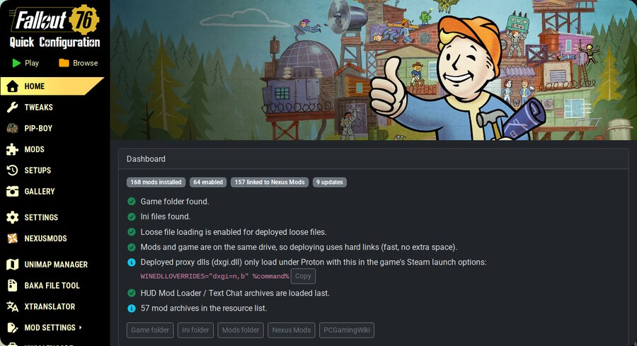

Fallout 76 Mod Manager
This is my main project. It's a mod manager for Fallout 76 that runs on Linux. I didn't start it from nothing, it's a fork of Quick Configuration 2 by FelisDiligens (which is MIT licensed) and I merged in ideas from a few other Fallout 76 mod tools.

The home dashboard of my mod manager. It checks the game folder and ini files are all ok.
What it does
- Installs and turns on/off mods for Fallout 76
- Reads and writes the game's .ba2 archive files natively, so it doesn't need Windows tools
- Links installed mods back to their Nexus Mods page and checks for updates
- Has game tweaks (like a frame cap) and an ini editor
- Backups so you can undo things if a mod breaks the game
Made with
Tauri, Rust and React (TypeScript).
Plan: putting it on Nexus Mods
I intend to make this an uploadable project on Nexus Mods so other Linux players can use it. It isn't there yet, before I can upload it I need to:
- Get permission / give proper credit to the original authors of the tools I merged
- Register my own Nexus app name (it still uses the original one)
- Write a proper description page and install guide
- Test it on a clean install, not just my own PC
Video
Here's the official Fallout 76 trailer so you know what game this is for:
Other projects
[Etc, etc, pretend it's some highly creditted list of bright github activity. didn't I say something about opsec in that other html? Damn I'd be pretty poor at it if I did put something here... *laugh track]